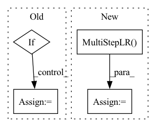

Pattern ID :13016
Before Change
random.seed(args.seed)
if args.evaluate:
args.results_dir = "/tmp"
if args.save is "":
args.save = datetime.now().strftime("%Y-%m-%d_%H-%M-%S")
save_path = os.path.join(args.results_dir, args.save)
if not os.path.exists(save_path):
os.makedirs(save_path)After Change
if args.lr_type == "cos":
lr_scheduler = torch.optim.lr_scheduler.CosineAnnealingLR(optimizer, args.epochs, eta_min = 0, last_epoch=args.start_epoch)
elif args.lr_type == "step":
lr_scheduler = torch.optim.lr_scheduler.MultiStepLR( optimizer, args.lr_decay_step, gamma=0.1, last_epoch=-1)
logging.info("scheduler: %s", lr_scheduler)
def cosin(i,T,emin=0,emax=0.01):
"customized cos-lr"In pattern: SUPERPATTERN
Frequency: 3
Non-data size: 4
Instances Fragment ID: 44009295
Project Name: lmbxmu/rbnn
Commit Name: be209779b9f8deeba9218c8d0deeb2a2623ff42b
Time: 2020-05-04
Author: 791411501@qq.com
File Name: imagenet/main.py
M Class Name: AnonimousClass
N Class Name: AnonimousClass
M Method Name: main(0)
N Method Name: main(0)
M Parent Class:
N Parent Class:
M File Name: imagenet/main.py
N File Name: imagenet/main.py
M Start Line: 28
M End Line: 175
N Start Line: 30
N End Line: 185
Before Change
random.seed(args.seed)
if args.evaluate:
args.results_dir = "/tmp"
if args.save is "":
args.save = datetime.now().strftime("%Y-%m-%d_%H-%M-%S")
save_path = os.path.join(args.results_dir, args.save)
if not os.path.exists(save_path):
os.makedirs(save_path)After Change
if args.lr_type == "cos":
lr_scheduler = torch.optim.lr_scheduler.CosineAnnealingLR(optimizer, args.epochs, eta_min = 0, last_epoch=args.start_epoch)
elif args.lr_type == "step":
lr_scheduler = torch.optim.lr_scheduler.MultiStepLR( optimizer, args.lr_decay_step, gamma=0.1, last_epoch=-1)
logging.info("scheduler: %s", lr_scheduler)
def cosin(i,T,emin=0,emax=0.01):
"customized cos-lr" Fragment ID: 44009294
Project Name: lmbxmu/rbnn
Commit Name: be209779b9f8deeba9218c8d0deeb2a2623ff42b
Time: 2020-05-04
Author: 791411501@qq.com
File Name: cifar/main.py
M Class Name: AnonimousClass
N Class Name: AnonimousClass
M Method Name: main(0)
N Method Name: main(0)
M Parent Class:
N Parent Class:
M File Name: cifar/main.py
N File Name: cifar/main.py
M Start Line: 28
M End Line: 172
N Start Line: 30
N End Line: 178
Before Change
test_sampler = torch.utils.data.distributed.DistributedSampler(test_dataset)
test_loader = torch.utils.data.DataLoader(test_dataset, batch_size=batch_size, num_workers=2, pin_memory=True, sampler=test_sampler)
if args.evaluate:
validate(test_loader, model, criterion, local_rank, args)
return
for epoch in range(args.start_epoch, args.epochs):
train_sampler.set_epoch(epoch)
test_sampler.set_epoch(epoch)
adjust_learning_rate(optimizer, epoch, args)
// train for one epoch
train(train_loader, model, criterion, optimizer, epoch, local_rank, args)
// evaluate on validation set
acc1 = validate(val_loader, model, criterion, local_rank, args)
// remember best acc@1 and save checkpoint
is_best = acc1 > best_acc1
best_acc1 = max(acc1, best_acc1)
if args.local_rank == 0:After Change
criterion = nn.CrossEntropyLoss().cuda(local_rank)
// =================================
optimizer = torch.optim.SGD(model.parameters(), 0.1, momentum=0.9, weight_decay=1e-4)
train_scheduler = optim.lr_scheduler.MultiStepLR( optimizer, milestones=[60, 120, 160], gamma=0.2)
// 3. 加载数据，
batch_size = int(args.batch_size / nprocs) // 需要手动划分 batch_size 为 mini-batch_size
Fragment ID: 44009291
Project Name: rentainhe/pytorch-distributed-training
Commit Name: 924a65892510a4cf1352ee408d6186344043f3a4
Time: 2021-01-05
Author: 596106517@qq.com
File Name: distributed.py
M Class Name: AnonimousClass
N Class Name: AnonimousClass
M Method Name: main_worker(3)
N Method Name: main_worker(3)
M Parent Class:
N Parent Class:
M File Name: distributed.py
N File Name: distributed.py
M Start Line: 60
M End Line: 111
N Start Line: 41
N End Line: 110